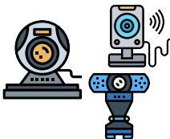
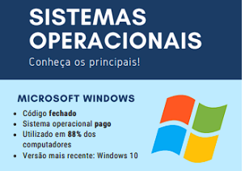

Ele possui o gabinete separado do monitor. O gabinete é o espaço onde estão alojados os componentes necessários para o funcionamento do computador: memórias, placas, processador, cabos, dentre outros .
Você já usou um computador, seja para trabalho, estudos ou mesmo para se distrair navegando na internet? Se a sua resposta é sim, te convido a conhecer um pouco mais sobre esta ferramenta tão importante no nosso dia a dia. Mas se a sua resposta é não, não se assuste pois esta apostila também é para você! Sente, leia com atenção, converse com os colegas, com o professor, aposto que ao final você também vai conhecer mais sobre essa tão importante ferramenta! Os computadores que usamos em casa ou no trabalho se dividem em dois tipos: os computadores de mesa, conhecidos também como desktops, e os notebooks, também chamados de laptops.
|
Computador do tipo torre Ele possui o gabinete separado do monitor. O gabinete é o espaço onde estão alojados os componentes necessários para o funcionamento do computador: memórias, placas, processador, cabos, dentre outros . |
 |
Os notebooks Os notebooks são computadores muito versáteis, leves e podem ser transportados com facilidade. É uma ótima opção para quem quer levar o computador para escola ou mesmo para o trabalho. Nele, o teclado, a tela (monitor) e os componentes estão todos acoplados formando uma peça única. |
 |
Computador do tipo All in One (tudo em um) A primeira vista este modelo de desktop parece um monitor apenas, não é? Mas não se engane, ele possui o gabinete, ou seja, memórias, placas, processador, cabos, dentre outros componentes, todos acoplados na parte de trás do monitor, o que torna o All in One um modelo de desktop mais prático e fácil de acomodar. |
|
Gabinete O gabinete é o espaço onde estão alojados os componentes necessários para o funcionamento do computador. Memórias, placas, processador, cabos, dentre outros componentes compõem o gabinete. Costumamos dizer que o gabinete é o próprio computador. |
|
Mouse É um dispositivo bastante simples, porém de muita importância. Com o mouse o usuário manuseia o cursor (seta que aparece na tela do computador) para selecionar os objetos desejados, abrir arquivos (com duplo clique), copiar e colar textos, selecionar pastas, figuras, imagens, etc. O mouse é composto normalmente por 2 botões: um esquerdo e um direito e, ao meio, uma rodinha (scroll). Mas qual a função deles? |
É o periférico em que se encontram os principais comandos para operar um computador. É pelo teclado que os textos são digitados. Ele está dividido em cinco partes:
A) Teclado alfanumérico: com letras e números como em uma máquina de
escrever;
B) Teclado numérico: como em uma calculadora.
C) Teclas de controle: são teclas que (F1, Home, Alt e Shift, Insert, Delete, Page
Up, Page Down, por exemplo), usadas isoladamente ou em conjunto com outras,
executam funções específicas.
D) Teclas de direção: essas teclas possuem setas indicando o sentido de direção
do cursor.
E) Teclas de função: realizam funções específicas, que mudam de acordo com o
programa ou sistema operacional utilizado. Elas também podem ser ativadas em
conjunto com outras teclas.
| A tecla Enter é utilizada para iniciar parágrafo, quebrar uma linha no texto ou efetuar confirmações. |
 |
A tecla Shift é utilizada para iniciar caracteres especiais ou ativar momentaneamente as teclas maiúsculas do teclado (mantendo a tecla Shift pressionada). |
 |
Tab é usada na edição de textos. Serve como marcador de parágrafos. Ela é útil também quando precisamos movimentar o cursor de um campo a outro, ou seja, para preencher cadastros, entrar no e-mail, etc. |
 |
Chamada de Backspace, essa tecla serve para retroceder o cursor, apagando os caracteres à esquerda do cursor. |
 |
A tecla Caps Lock ativa/desativa as letras maiúsculas do teclado. |
 |
A Print Screen é utilizada para capturar imagens que são exibidas na tela do computador. |
 |
A tecla Control tem utilidade principalmente quando usada em conjunto com outras teclas, nos chamados “atalhos do teclado. |
 |
A Alt é uma tecla de controle alternativo. Libera o uso do menu para trabalhar com o teclado e também pode ser combinada com outras teclas para executar funções. |
 |
A tecla Esc ou escape é usada para abandonar uma tela, programa ou menu. |
 |
A Delete ou Del apaga um caractere à direita do cursor. No Windows, deleta arquivos ou pastas. |
 |
Monitor O monitor é outro periférico bastante importante, pois é através dele que vemos as imagens que são projetadas pelo computador. Atualmente, muitas TVs vêm com função de monitor, portanto, possuem saídas específicas para ligar à CPU e assim projetar a imagem. Como as TVs, quanto melhor a resolução do monitor, melhor será a visualização da imagem projetada. |
 |
Webcam Anteriormente considerada apenas um acessório para os computadores, a webcam se tornou essencial para as gravações de videoaulas e participação nas aulas on-line. Com uma webcam, utilizando aplicativos de webconferência como Google Meet e Microsoft Teams, por exemplo, você pode aparecer em vídeo durante a aula online. |
 |
Acoplada ao computador, como normalmente já vem nos notebooks e desktops do tipo All in one. |
|  | Individual, conectada ao computador por meio de um cabo do tipo USB. |
 |
Kit Multimídia Assim como a webcam, o kit multimídia é um periférico do computador que se tornou bastante utilizado pelos usuários nos últimos anos. Com função de recepção e transmissão de voz e áudio, os kits têm se tornado cada vez menores, porém mais robustos quanto à qualidade de captação. |
Agora que conhecemos alguns dos principais periféricos de um computador, vamos aprender como eles podem ser ligados ao computador
| PERIFÉRICO | TIPO DE CONEXÃO | IMAGEM |
|
PS/2: pouco usado atualmente | |
|
USB: muito usado atualmente |  |
|
VGA |  |
|
HDMI: conecta monitores e retroprojetores mais modernos |
 |
|
FONTE DE ALIMENTAÇÃO | |
|
RJ-45 | |
|
ENTRADA E SAÍDA P2 |
Identificando as entradas do gabinete
Agora que você já conhece as principais conexões de entrada e saída
do computador, clique aqui ou escaneie o QR Code e assista o vídeo
para aprender como identificar cada uma delas no seu computador e
como fazer as conexões corretas de cada equipamento.
Os softwares são essenciais para o funcionamento dos computadores, pois é a partir deles que são feitas operações e comandos que são interpretados para depois serem executados. O principal software de um computador é o sistema operacional. É a partir dele que as instruções de inicialização dos periféricos são comandados.
|  |
| Além disso, o sistema operacional é a
base para que outros softwares
(programas) sejam executados no
computador. Conheça os principais sistemas operacionais disponíveis atualmente: Mas o que significa dizer que um sistema é código aberto ou fechado? Pago ou gratuito? Todo o sistema (software) é desenvolvido através de uma enorme sequência de instruções de |
computador, a qual denominamos
código fonte. Ter um sistema de código fonte aberto significa dizer que é possível realizar modificações no produto sem a necessidade de pagar uma licença comercial. Essa é justamente a explicação para alguns softwares serem considerados pagos ou gratuitos. |

|

|
Um sistema operacional gratuito e de código aberto, é construído pela comunidade por meio de um modelo colaborativo de produção intelectual. Nesse modelo, a construção do software não é feita por uma empresa, mas sim por uma comunidade de pessoas ao redor do mundo. A construção coletiva e colaborativa é a base dos sistemas operacionais abertos e gratuitos.